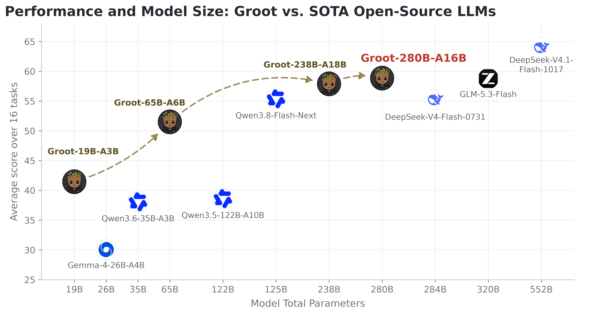
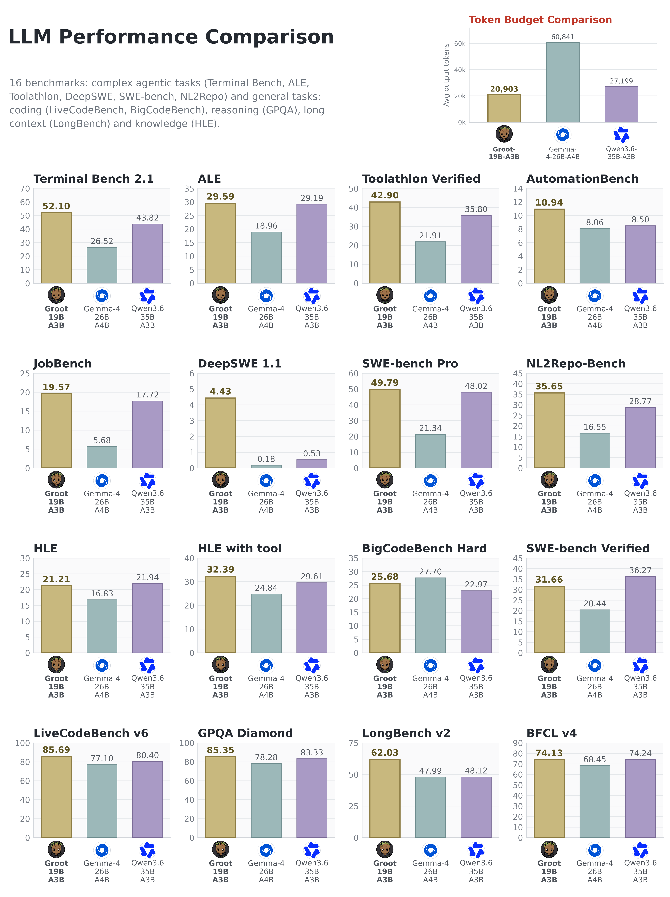
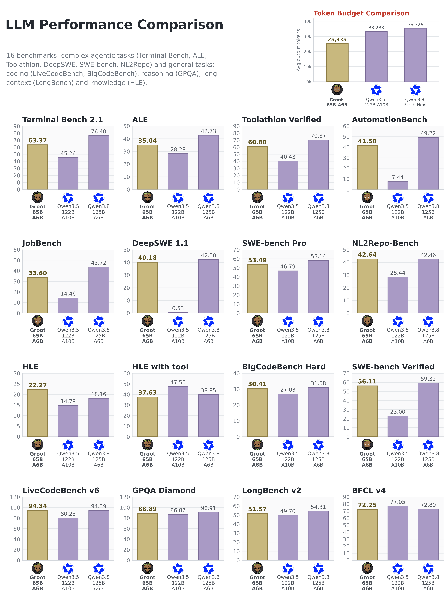

Groot-19B-A3B
- Built from
- Qwen3.6-35B-A3B
- Active
- ~3B / token
- Context
- 256K
Ahead of both Qwen3.6-35B-A3B and Gemma-4-26B-A4B on 12 / 16 benchmarks, with 23.1% fewer output tokens on average than Qwen3.6.
Groot is a family of four open-weight Mixture-of-Experts models for reasoning, coding and tool use — built from Qwen, GLM and DeepSeek models, then made smaller while keeping the capabilities that matter when there is real work to do.
Thinking-mode models evaluated on demanding reasoning and long-context tasks, with context windows from 256K to 1M tokens.
From terminal workflows to repository-level coding and multi-step software engineering tasks.
Evaluated across tool selection, automation and agentic workloads — not just single-turn answers.
The 19B and 65B models each used fewer than 100M tokens of open-source data for post-training. This is post-training on top of the listed base models, not training from scratch.
Ahead of both Qwen3.6-35B-A3B and Gemma-4-26B-A4B on 12 / 16 benchmarks, with 23.1% fewer output tokens on average than Qwen3.6.
Ahead of Qwen3.5-122B-A10B on 14 / 16 benchmarks, including 63.37 on Terminal Bench 2.1 and 56.11 on SWE-bench Verified.
Ahead of both GLM-5.3-Flash and DeepSeek-V4-Flash-0731 on six agentic benchmarks, including 65.13 on DeepSWE 1.1 and 50.18 on NL2Repo-Bench.
Ahead of those same two models on 8 / 16 benchmarks, with 56.71 on NL2Repo-Bench and 63.47 on SWE-bench Pro.
Our reported evaluations across 16 benchmarks, unweighted — not an independent leaderboard. The full per-model charts include the wins and the losses.

Across the 16 evaluation runs, the 19B uses 23.1% fewer output tokens on average than Qwen3.6-35B-A3B, and the 65B uses 28.3% fewer than Qwen3.8-Flash-Next. These are output-token comparisons, not measured latency or throughput improvements.


The weights live on Hugging Face. Use the GrootTeam/… repository IDs in your
runtime configuration, and consult each card for runtime versions, parsers and memory notes.
| Model | Available weights | Setup |
|---|---|---|
Groot-19B-A3B-261023 |
BF16 · FP8 · NVFP4 · GGUF | Quickstart ↗ |
Groot-65B-A6B-261023 |
BF16 · FP8 · NVFP4 · GGUF | Quickstart ↗ |
Groot-238B-A18B-261023 |
FP8 · GGUF | Quickstart ↗ |
Groot-280B-A16B-261023 |
FP8 / FP4 experts · GGUF | Quickstart ↗ |
Tried Groot on something real? We would like to hear about it — especially the parts a benchmark does not tell us. Open an issue with the model and quantization, runtime version, hardware, context length and a reproducible example where possible. Please leave out credentials and private data.